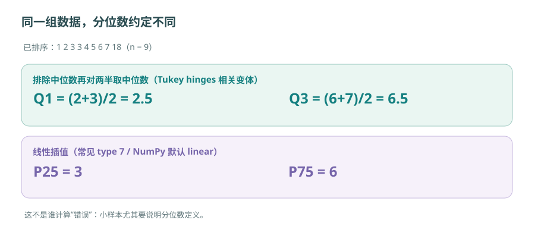
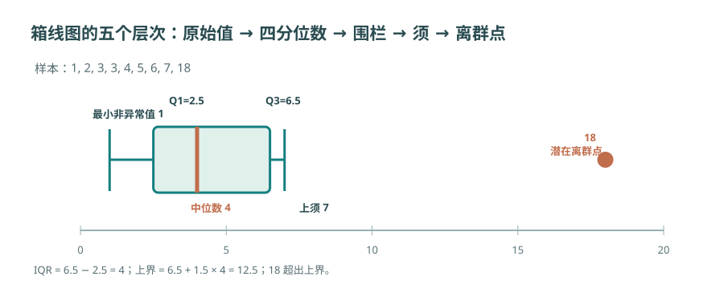
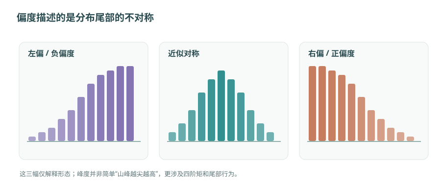

分位数、箱线图与分布形态
为什么同一组数据会有不同的四分位数？一个离群点该如何画、又是否应该删除？分布的“尾巴”告诉我们的内容，远多于一个均值。
01 · 为什么五数概括仍不够
只报均值和标准差，依然可能看不到“分布的尾巴”。例如一组完成时间为 1、2、3、3、4、5、6、7、18 分钟：18 分钟的任务与其余八次明显不同，我们需要能显示位置、跨度和异常点的工具。
这里每个数字均为合成数据。本文所有小样本示例都把分位数计算规则写明；不把某种软件默认值当成唯一“标准答案”。
02 · 百分位数与四分位数：先写清算法
第 p 百分位数的直观作用是把有序数据切分，让约 p% 的数据位于所选位置附近或以下；遇到有限样本与并列值时，“百分之多少的数据低于阈值”的说法必须小心处理。常见定义并不完全一致，特别是样本很小时。

本章下面的 Tukey 箱线图全部使用排除中位数的分半法（对九个数按前四、后四计算），而不是混用两套定义。
03 · 箱线图把五个数摘要成空间结构
箱体左端 Q1 = 2.5，右端 Q3 = 6.5；中间竖线为中位数 4；IQR=4。常见的“改良 Tukey 箱线图”须延伸到仍落在 1.5×IQR 内的最远实际观测，因此须端是 1 和 7，18 作为潜在离群点单独画出。不要把 1.5×IQR 外的点自动删除。

五数概括在不同箱线图约定下可能使用最大值/最小值作为须端；因此看到一个没有注释的箱线图，不应自行断言其离群点规则。OpenStax 箱线图章节给出入门版本，NIST 箱线图资料说明探索性分析中的图示作用。
04 · 偏度与峰度是不同维度

一个常见的偏度定义是标准化第三中心矩，其中 m_k = (1/n) Σ(xᵢ−x̄)^k。四阶矩与尾部的极端偏离密切相关；“超额峰度”减去 3 使正态分布的理论值为 0（有总体矩存在的前提下）。它不是“曲线顶部有多尖”的同义词。
这里的 g1、g2 是直接使用样本中心矩的矩统计量，并非偏差修正版本。不同统计软件对 Fisher/Pearson、biased/unbiased 的选择会产生数值差异；解释前应记录计算约定。
05 · z-score 是相对于哪个分布？
标准分数表示观测值距参考均值有多少个参考标准差。例如研究者明确给定参考均值 μ=4 分钟、总体标准差 σ=2 分钟，x=7 分钟的 z=(7−4)/2=1.5。这不意味着“第 93.3 百分位”，除非再附加正态分布等假设。
两个常见误读
z-score 本身不要求正态性；但把 |z|>3 视作某个通用错误概率阈值通常需要分布假设。对于小样本、厚尾或严重偏态分布，均值与标准差也可能被极端值拉动；可同时查看中位数、IQR 与原始点。
06 · 改变最大值：哪些摘要会变？
将最后一个观测 18 改成 7–25 之间的其他值，其他八个数不变。由于中间的排序位置和分半四分位数都不变，本例的中位数始终为 4，Q1/Q3 始终是 2.5/6.5，但均值会改变。
一个极端观测的影响
均值 5.44 分钟；中位数 4；上围栏 12.5，标为潜在离群点
from statistics import mean, median, stdev
x = [1, 2, 3, 3, 4, 5, 6, 7, 18]
q1 = (2 + 3) / 2 # 排除总体中位数的分半法
q3 = (6 + 7) / 2
fence = q3 + 1.5 * (q3 - q1)
print(q1, median(x), q3, fence) # 2.5 4 6.5 12.5
print(round(mean(x), 3), round(stdev(x), 3)) # 5.444 5.077
print([v for v in x if v > fence]) # [18]自我检查
问题：箱线图中的上须端为 7、上围栏为 12.5、异常点为 18。可以写“上须等于 12.5”吗？
答案：不可以。围栏是阈值，须端是阈值内实际观测到的最大数据值，即 7。
07 · 参考资料与适用边界
- OpenStax · Measures of Location：四分位数与百分位数。
- OpenStax · Box Plots：箱线图入门。
- NIST · Skewness and Kurtosis：偏度、峰度统计量。
所有图形与数据均为原创教学示例。分位数和偏峰度有多种约定，本文不声称所有软件均输出同一结果。